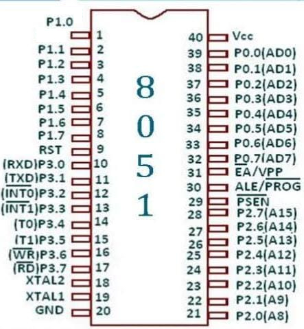

Simulator for Square Wave Generation using 8051 Microcontroller
Input
Delay:
Take 0 as input
Take 1 as input
Clear
Start
Code
Squarewave:
CPL P1.0
ACALL
50
SJMP Squarewave
Instructions
First calculate the delay time using frequency and write it in the Delay input box.
Then choose the input as 0 or 1 by clicking on the corresponding buttons.
In the first statement we complement the contents of port 1.0.
Then we call the delay program and the square wave is generated.
Then we jump back to the first statement.
The student can pause the waves and calculate the frequency by observing the time period of the waves and verify.
Working
